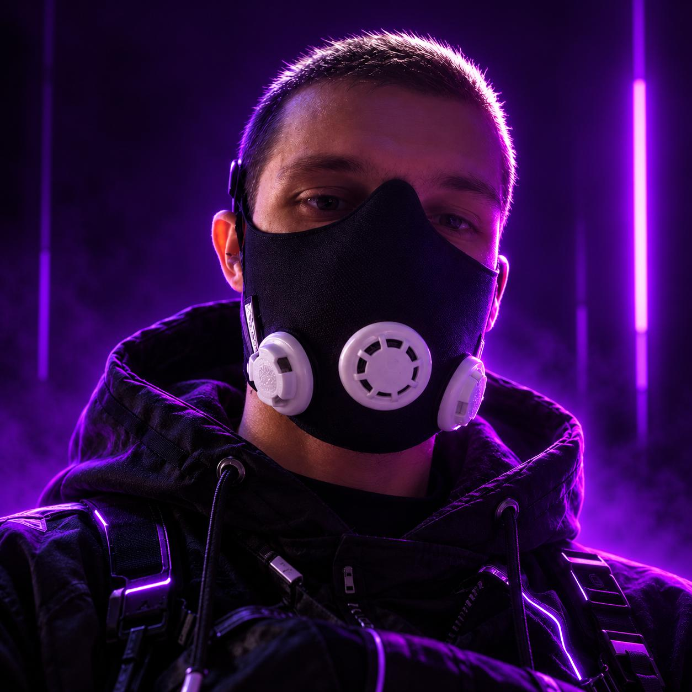

Slipcast-Dev
Разработчик
Я разработчик на стыке кода, искусственного интеллекта и автоматизации. Создаю приложения и цифровые инструменты, в которых ИИ становится частью рабочего процесса: помогает анализировать данные, принимать решения и выполнять задачи.
Проектирую ИИ-агентов, подключаю их к API и сервисам, выстраиваю совместную работу нескольких агентов — от поиска информации до выполнения последовательных действий. Уделяю внимание точности, управляемости и понятным границам их самостоятельности.
Мой подход — превращать смелые идеи в продуманные продукты. Чистый код, простая архитектура и технологии, которые приносят ощутимую пользу.